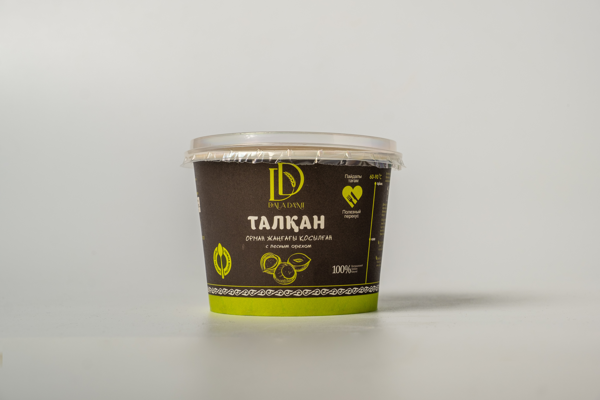

Натуральные продукты из пшена
Талкан с лесным орехом
Талкан с добавлением молотого фундука для более насыщенного вкуса.
Вес: 50 г
О продукте
Талкан с лесным орехом создан на базе традиционного рецепта с добавлением молотого фундука. Орех усиливает аромат, делает текстуру более насыщенной и повышает питательность продукта. Отличный вариант для полезного завтрака или перекуса в течение дня.
Состав
Талкан из пшена, обезжиренное натуральное сухое молоко, фундук, сахар, лактоза.
Как употреблять
Подходит для завтрака или перекуса; можно добавлять в тёплую воду и молочные напитки.